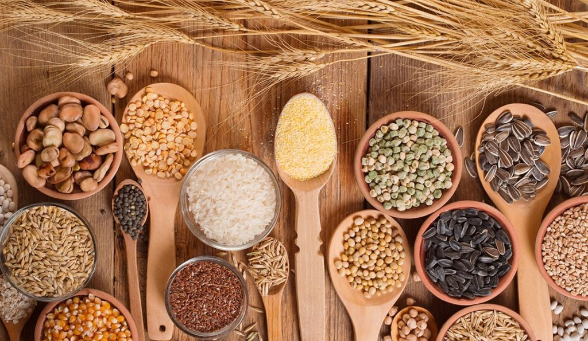
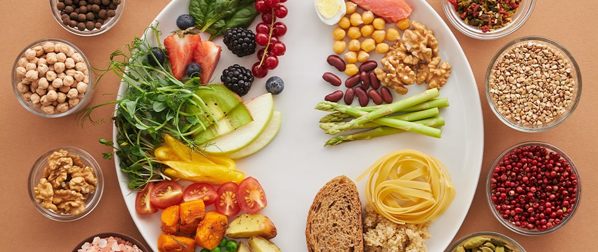

Alimentação saudável: dicas para você conseguir manter
Alimente-se devagar
Alimentar-se rápido demais nos deixa a sensação de peso, de sono, e faz com que comamos mais do que o necessário também. Para evitar isso, desligue aparelhos durante as refeições, pois estes podem disparar a ansiedade e fazer você comer depressa. E sempre que possível, almoce na companhia de alguém, para que possam conversar e saborear a comida, fazendo sua refeição mais agradável.
Beba, no mínimo, 2 litros de água por dia
Precisamos de água pois nosso sangue é composto por 90% dela, e nosso corpo pode variar entre 50% e 75%, então cada vez que perdemos líquido (suor, etc), é preciso repor. Além do mais, a água faz uma limpeza em todo nosso organismo, hidrata nossa pele, e é por ela que vitaminas e minerais chegam nas células de todo nosso corpo.
Reduza os níveis de açúcar
O açúcar refinado é um composto que vem da cana-de-açúcar, porém, toda a parte boa dele foi retirada, sobrando apenas as calorias. Reduzir significa deixar de ingerir uma quantidade de calorias desnecessárias para nosso organismo. Procure também substituir a versão refinada pelo mascavo, por exemplo, que não passou pelo processo de refinamento, e ainda mantém os valores nutricionais.
Dê preferência para alimentos integrais
Da mesma forma acontece com a farinha branca, ou seja, após um processo de refinamento, todo o valor nutricional dela foi retirado, restando apenas o carboidrato. Prefira as opções integrais do macarrão, arroz, pão, etc, que ainda preservam os nutrientes naturais. E fique atento para não ser enganado, pois o único tipo de farinha na lista de ingredientes do produto deve ser “Farinha de Trigo Integral”. Se tiver outro tipo de farinha de trigo, o produto não é 100% integral.
Inclua alimentos orgânicos em sua alimentação
Estes são preferidos pois são produzidos sem utilização de agrotóxicos e conservantes, que são substâncias maléficas para o nosso organismo. Caso não seja possível encontrar nestas versões, sempre ao escolher frutas, verduras e legumes, pense em como você as encontraria se estivesse pegando direto do pé. Se oferecerem a você um tomate muito vermelho, muito redondo, de casca lisa e brilhante, fique esperto!
Aposte em lanches saudáveis
Quando saímos de casa as tentações começam a aparecer, já que é muito mais fácil encontrar um lanche industrializado do que algo saudável. Por isso, prepare lanches saudáveis que você possa levar com você, por exemplo um mix de castanhas, que são facilmente transportadas em saquinhos, ou um sanduíche integral, frutas, entre outros, evitando de comer besteiras por aí.
Coma a salada primeiro
No almoço e no jantar sempre comece suas refeições com a salada, especialmente as saladas frias de folhas verdes, pois são ricas em nutrientes e vitaminas, e são excelentes fontes de fibras que conferirão saciedade, assim quando chegar no prato principal, evitará que você coma além da conta. E quando for escolher a salada, quanto mais colorida ela for, melhor!
Consuma frutas todos os dias
As frutas são excelentes alimentos, pois são ricas em fibras, vitaminas, minerais, e atuam sempre de forma benéfica em nosso organismo. Consuma, no mínimo, 3 porções por dia, e sempre que possível variando as frutas. Assim você poderá desfrutar de todos os benefícios que elas apresentam.
Faça de 4 a 6 refeições por dia
Assim, você evita ter picos de fome durante o dia, o que te faria ter vontade de comer mais do que o necessário na próxima refeição. Fazendo desta forma, seu organismo estará sempre bem nutrido, e você comerá somente o necessário. Lembre-se que, quanto mais refeições você fizer ao dia, menor será cada porção.